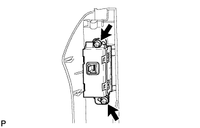

КОНТРОЛЬНАЯ ЛАМПА ВЫКЛЮЧЕНИЯ ПОДУШЕК БЕЗОПАСНОСТИ > СНЯТИЕ |
| 1. ОТСОЕДИНИТЕ ПРОВОД ОТ ОТРИЦАТЕЛЬНОГО ВЫВОДА АККУМУЛЯТОРНОЙ БАТАРЕИ |
| 2. СНИМИТЕ ОТДЕЛОЧНУЮ НАКЛАДКУ ПАНЕЛИ ПРИБОРОВ № 1 |
| 3. СНИМИТЕ ПРАВУЮ ОТДЕЛОЧНУЮ НАКЛАДКУ ПАНЕЛИ ПРИБОРОВ |
 |
Освободите 4 фиксатора.
Отсоедините разъем и снимите крайнюю отделочную накладку панели приборов.
| 4. СНИМИТЕ СИГНАЛЬНУЮ ЛАМПУ В СБОРЕ |
|  |
Выверните 2 винта и снимите лампу.